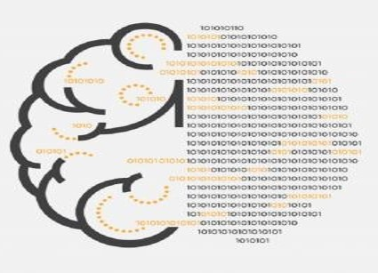

Wat is een user interface
Een user interface is een communicatiemiddel. De communicatie gebruikt de spreektaal, is eenvoudig en direct. De ontwerper houdt de vrije ruimte voor interpretatie beperkt.
Een IT systeem is een technische realisatie van een business nood en heeft een business doelstelling. De user interface zorgt ervoor dat gebruikers zich een juist beeld (hun mentale of conceptuele model) vormen van de applicatie. Een goede interface verhoogt de kans dat de communicatie lukt.
Ontwikkelaars en gebruikers hebben beiden hun eigen mentale model dat ze opbouwen vanuit hun referentiekader. Beiden hebben 'gelijk' maar de modellen zijn niet dezelfde.

Waarom moeten user interfaces goed zijn?
Minder goede interfaces veroorzaken dat onder andere
De verwachte ROI er niet komt
Bedrijven, organisaties vragen IT systemen die een oplossing zijn voor de problemen, de uitdagingen die zij hebben. Als de user interface niet goed is, zullen medewerkers niet in staat zijn hun taken goed uit te voeren. Bedrijven, organisaties halen niet de verwachte resultaten. De ROI blijft achterwege.
Het menselijk kapitaal onderbenut blijft
Medewerkers zullen hun motivatie verliezen, fouten maken, gefrustreerd geraken. Het verloop van personeel is groter, ervaring en kennis gaat verloren, nieuwe aanwervingen, opleidingen zijn nodig. Dit betekent extra kosten.
Er meer ondersteuning, meer opleiding nodig is
Zwakkere systemen hebben een onduidelijke werking. Medewerkers hebben vragen, stoten op problemen. Zij verdienen hulp om hun taken uit te voeren. Dit vereist meer opleiding, hertrainen na verloop van tijd, een omvangrijke supportorganisatie of helpdesk. Weer extra kosten.
De concurrentie u de loef afsteekt
Heeft uw concurrent een beter te begrijpen website, loopt zijn verkoopsproces vlotter, vinden klanten gemakkelijker wat ze nodig hebben? Uw concurrent snoept u potentiële klanten af, winkelkarretjes blijven onafgewerkt staan, u haalt de gehoopte omzet niet.
Heeft uw concurrent beter bruikbare applicaties? Dan zijn de operationele kosten van hem kleiner, zijn medewerkers meer gemotiveerd, het verloop kleiner...
Dit zijn slechts enkele voorbeelden van negatieve effecten. Het spreekt voor zich dat de bruikbaarheid niet de enige factor is maar bruikbaarheid kan wel zeer betekenisvol zijn.
De technologie verandert
Stellen dat de technologie snel evolueert, is een understatement. Door die wijzigingen veranderen de verwachtingen en ervaringen. Met systemen van pakweg 10 jaar geleden,komt u niet meer weg. Evoluties in technologie, user interface... niet opvolgen, betekent een afbrokkelend concurrentievermogen. Door de breedte van het domein, moet u zich specialiseren. Alles kennen is er niet meer bij.
Mobile commerce
De business evolueert voortdurend en dit legt een grote druk op de applicaties. Kunnen ze de evoluties volgen? Verlaagt het aanpassen van de toepassingen de kwaliteit niet van de toepassing (degradation by change)? Soms zal het nodig zijn het geheel eens opnieuw te bekijken, te herstructureren en de aanpasbaarheid bij te sturen.
Naast de veranderingen in de business en zijn werking, is het aandeel van de kosten van het personeel fors gestegen. Deze trend zal zich nog verder doorzetten. Eenvoudig bruikbare applicaties zullen de business helpen de doelen te bereiken tegen zo laag mogelijke kosten. De kosten voor opleiding en ondersteuning zullen dalen bij meer bruikbare toepassingen.
De verwachtingen van de gebruiker zijn sterk geëvolueerd en ook dit versterkt nog. Het internet heeft gezorgd voor andere verwachtingen. Het Google syndroom is hier een voorbeeld van (als Google het zo eenvoudig kan maken, waarom jullie dan niet?). Dat de vergelijking tussen Google en uw toepassing niet opgaat, mag geen argument zijn.
Bruikbaarheid is vrij goed doorgedrongen in de directiekamers, tenminste het sloganeske ervan. 91% van de beslissers in bedrijven stellen dat de 'customer experience' zeer belangrijk is. Woorden en daden durven nogal verschillen.
In 2008 deed Harris Interactive een onderzoek naar de bruikbaarheid van formulieren op het mobile web. Formulieren zijn zeer belangrijk want in e-commerce omgeving dienen ze om bestellingen te plaatsen en te betalen. Zij stelden vast dat:
87% van de gebruikers ondervinden problemen, vooral met de formulieren
41% laten het winkelmandje staan en verlaten de website
72% van deze 41% kopen nooit meer iets bij deze leverancier
84% van deze 41% delen hun slechte ervaringen met anderen en dit zowel on line als off line
$ 57.000.000.000 gaat jaarlijks verloren in het aankoopproces.
In 2011 was het niet veel beter (survey Harris Interactive):
84% hebben nog steeds problemen, 43% van hen die problemen ondervinden op de mobiele site, proberen het later via een computer
63% van deze klanten keren de leverancier definitief de rug toe
De werkelijkheid is anders dan verhoopt ...
Created with the Personal Edition of HelpNDoc: Easily create EPub books